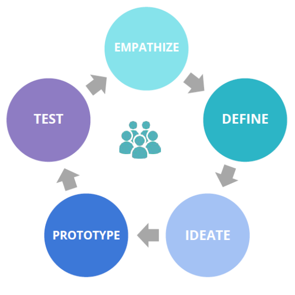
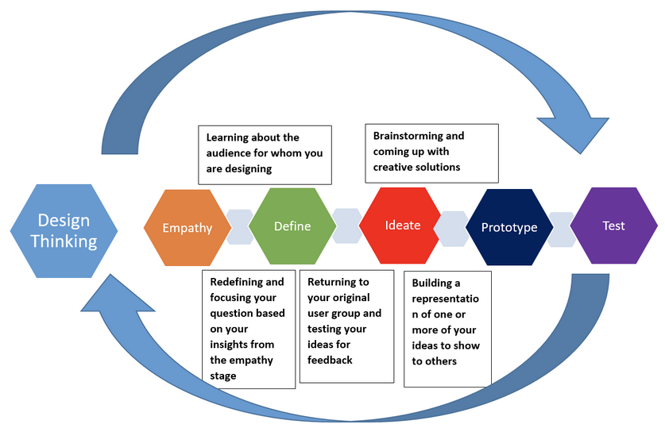

Must be free and believe that they are honestly supported to fail and learn. This must be honest and iron clad at all levels of leadership in the organization.
The second one of the team gets burned for not “delivering” on something that was a learn/fail fast effort, all trust is lost and your innovation efforts become almost impossible to drive forward. We made an effort to take the negativity out of the term “failure”. We used Smallify’s “Failure bow” to make a joke out of messing something up. We follow up almost every usage of the term “failure” with the statement “what we learned was…”
If you don’t think your organization can flip the negativity on failure, then, you might want to take “Fail” out of the nomenclature. You might want to call everything a “learning”.
Ask yourself:
Resources for you:
The foundation of successful products and services that resonate with users is Human Centered Design. This emphasizes learning and empathizing with the people using a good or service to deeply understand how to solve their problems.
Secondly, utilizing the iterative/Lean product development process (often broadly referred to as “agile”) as a framework to turn the insights from the HCD process into effective and lovable products. A good product manager must understand: business needs, laws and policies; technological constraints; voice of the users. Who better than state staff to fill this role? That’s why we believe that product management must become a core skill for government workers moving forward.
The Humanistic Centered Design Process
Design Thinking Process

They are pretty much the same.
Design thinking and effectively breaking larger problems into more tightly defined challenges to break out of “group think” and status quo solutions
Core to our success is our training in communications and facilitation techniques. This ability is key to helping drive people to consensus. Often in this work, your staff will go into engagements where the participants are skeptical. Our staff turns this understandable doubt into excitement, but focusing on empathizing with staff and users on their paint points. We work side by side to carefully define the problem and break it into more easily addressed challenges. We then iterate on solving a few challenges at a time until we have solved a large part of the entire problem space.
Lastly, we strive to push staff into high levels of personal growth. The more enlightened staff feel, the better they are able to perform this challenging, transformative work. We want staff to push to become the best versions of themselves. Self-awareness and empathy are core to this.
Our structure is that existing state staff join the office either as full time or part time members for 1 to 2 years stints. Then, they return to their home departments to spread the skills and mindsets they learned with OI. We must maximize their time with us.
Our engagements with departments are timeboxed to eight weeks to avoid getting stuck in quagmires and to create a sense of urgency. The eight weeks are broken into a week of prep to schedule interviews and meet the subject matter experts (SMEs) followed by three two week sprints and ending with a week of wrap up and documentation. Prior to starting we have 2-3 weeks of prep work to set up interviews and logistics so we can start interviews first thing Monday morning on our official start day.
We also have two additional models: Two week mini-engagements focused on problem definition or skills exchange. 16 week engagements for larger scale efforts/more complex delivery needs.
Your teams will need to convene groups of people with different motivations and goals. They need to drive them to a common understanding and agreement to collaborate to solve a problem. This is not a trivial matter, but there are techniques to help do this effectively.
Ask yourself:
Resources for you:
Problem definition is the core of innovation. We start with a “problem statement”. This is often broad like “Let’s fix access nutrition assistance programs for needy Californians.” It is a good articulation of the general problem space, but not specific enough to know where to start tackling the problems. Unfortunately, this is where most organizations stop.
We take the problem statement and break it into smaller, more tightly defined “challenge statements”. These are typically parts of the problem that can be improved in an arbitrary amount of time. For example, “How might we improve EBT card usage in Mendocino County for the Spanish speaking community?” This is more specific and measurable. We can set up an effort to see if it improves things in eight weeks or less. After we get some momentum fixing this issue, then we move on to the next challenge, and the next until we have solved a large part of the bigger problem. This is how you generate positive momentum!
Ask yourself:
Are these problems too broad? Can I break this problem into a smaller, more manageable chunk without it becoming trivial? Is my statement phrased in a “How might we…” format?Resources for you:
Check out the lightweight strategy for OI
Build up the team that lives there so they can continue the work when you are onto the next thing. This is true even for local teams. Innovation teams should never stay there forever else the culture change is not organic. That would be a forced change and will crumble once the team leaves. Give the departmental staff the tools they need to carry the work forward.
Ask yourself:
Resources for you:
The Phoenix Project by Kevin Behr, George Spafford, and Gene Kim
My biggest complaint with typical training in the government, is that people get inspiring training, then return back to business as usual. They do not get to use the new skills or techniques they learned because there is no support to try anything new and the antibodies attack the new idea. The opportunity fades, the skill is lost, money wasted and inspiration squashed. Thus, staff that go through training join OI staff as part time or full time staff for 1 -2 years to practice the new skills until they become habit.
This means Innovation and organizational leadership must agree that
This work is tough. Need people who want to do this and use the methods. Need grit to push through the plethora of blockers in the work and their participation.
Create a team that has both career state talent and fresh skills from the outside. Start with talented internal staff. If you aren’t able to bring in outside talent, then use those same people to train their skills to your staff. If possible, cultivate some sort of fellowship to get talented outside talent in for fresh ideas on a 2 year basis. This will attract people that want to work in government, but do not want to make it a career, while allowing them to drive more culture change than if they were contracted staff.
An office cannot depend on all coming from inside or outside the organization. Esp. development talent - larger pool if contract for skilled developers given developer job options not realistic have them be state staff forever. That’s why so critical for state staff to be great product people to make sure the ask of what the contractor is clear on what they need to help build to solve the problem.
Ask yourself:
Resources for you:
LINK TO HIRING STRATEGY DOCUMENT WITH INTERVIEW QUESTIONS, SCORING STAFF AFTER INTERVIEWS (FORM ON DRIVE), STAFFING ASK METHOD FOR FT/PT STAFF (IO STAFFING PROPOSAL ON DRIVE), IO STAFFING POSITION DESC (ON DRIVE), STRUCTURE OVERVIEW FT/PT for 1 or 2 years (MAYBE MAKE A SECTION ON GH AND JUST LINK TO IT)
Top must support 100% but not dictate what processes you do. Influencers - get grassroots and gurus onto projects and teach them the techniques either as staff or early engagements. Middle don’t forget….put in stuff about specialized training for them to learn how to manage and report project using these techniques.
This is so key. Top has to just expect culture change….eventually. Not 5 innovations in a quarter. It doesn’t work that way and when you put those arbitrary goals, then you press for success and force things that need to be pivoted or stopped.
Use metrics like UTAUT, net promoter to see if your prototypes are improving things. Look at usage, etc. that shows your things are better than status quo.
We borrowed shamelessly from USDS’s values and adjusted them to focus on specific issues that were important for the unique culture at CHHS. Take these lessons and adjust them for your needs. Use them to guide your work. When faced with a dilemma you’ll be surprised how well the values help clarify your best actions.
It’s uncomfortable at times, but if the organization can’t honestly look at things that aren’t going well, they will have no chance in fixing it. Do it gently and respectfully, but insist on telling the truth as you found it AND add a solution to fix it. That is the point of the prototypes. “This is bad, but if we try this our testing found that it will make it XX% better”.
Resist the temptation to make everything about technology. Tech is a tool and an enabler so you must align closely with the tech people. You will undoubtedly have cultural and skills based blockers. If people think you are only about providing them with shiny new technology, they will be waiting for a silver bullet solution to fix everything. Focus on improving the human based workflows. Ask what makes the most sense to get the job done if technology or existing limitations were not a factor. When those are working better, then add technology. This will also gain you buy in that you are truly there to improve the human condition in the organization for both employees and constituents.
Individual contributors get swallowed by the larger organization and this process needs a team. Teams of 4 or at least multiples of 2 so you have a note taker and interviewer. (Can pull in quote from Content Strategy Toolkit Meghan Casey)
The California Health and Human Services Agency oversees departments and offices that provide a wide range of services in the areas of health care, mental health, public health, alcohol and drug treatment, income assistance, social services and assistance to people with disabilities.